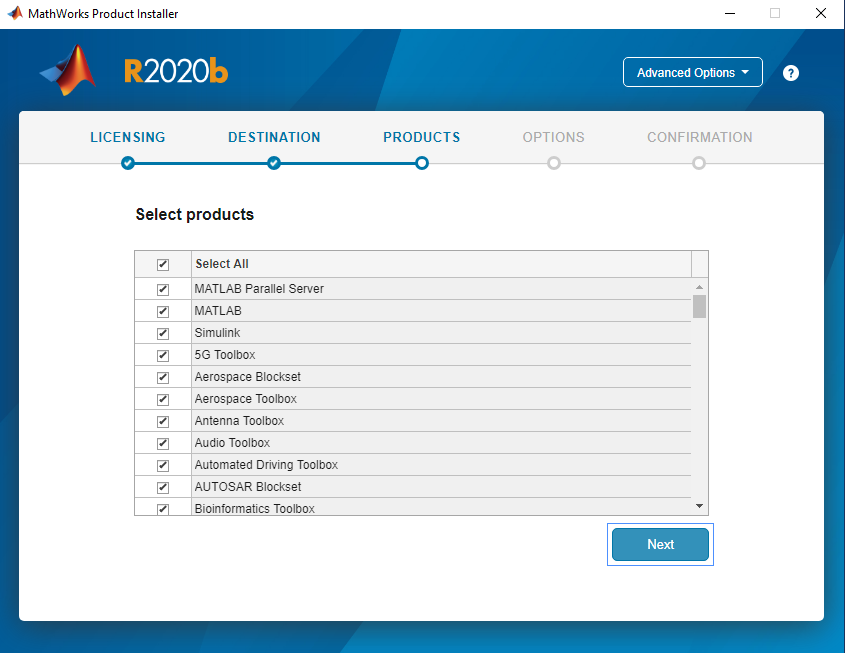

How to Install Matlab R202b in Microsoft Window 10
Note: To Install "Microsoft Visual Studio Express 2015" Before Installing Matlab R2020b on Win 10.
1. To Open the Matlab R2020b ISO file and run setup. Click on "Yes" to accept the Licence Agreement & click the "Next" button.
2. Enter the "File Installation Key" and Click on "Next" Button.
3."Select Licence File" and Click on "Next" button. the server licence is "akash2.cc.iitk.ac.in".
4. Select the "Destination Folder by Default and Click on "Next" button.
5. Select "Products" and Click on the "Next" option.

6. Select the "Confirm Selections" and Click on "Begin Install" button.
7. Installtion Process running wait for 15-30 minute approx to Complete Installation.
8. Installtion Process Complete and Click on "Close" button.
9. Preview of Matlab R2020b as below